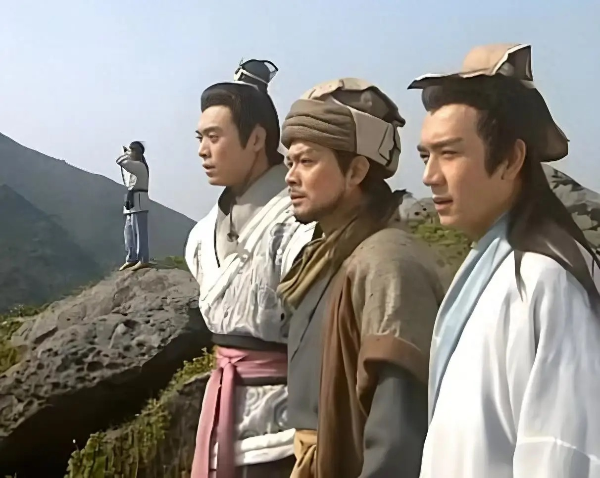

阅读感悟
重读《天龙八部》，早已不再是看江湖打斗、神功奇遇，而是读懂了人生与人心。这本书最动人的地方，是它足够真实、足够温柔，也足够残酷。
世间所有人的痛苦，皆源于执念。慕容复执着复国，终失本心；段誉为情执着，受尽纠缠；阿紫执着偏爱，一生偏执；萧峰执着公道，却被命运反复捉弄。书中众生，皆是现实众生的缩影。
何为英雄？萧峰告诉我们：真正的英雄从不是无敌、顺遂、风光无限，而是明知命运不公、世事难全，依然心怀善意、肩担大义、悲悯众生。
《天龙八部》让我明白：人生难得圆满，万事皆有遗憾。学会放下执念、接纳不完美、善待身边人与当下生活，便是最好的修行。这也是金庸先生借武侠赠予读者最珍贵的人生智慧。
